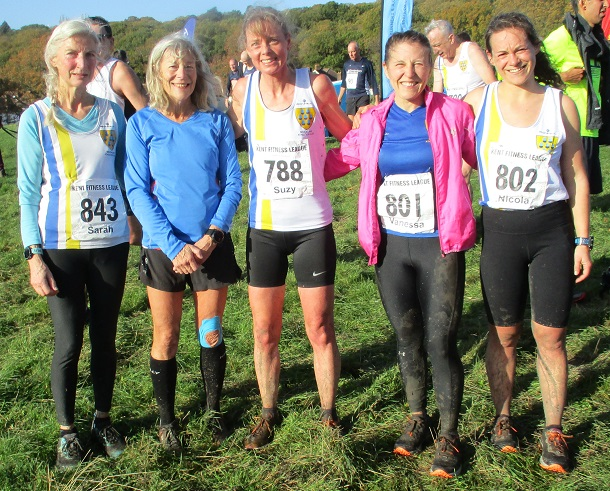

Sevenoaks AC women retained their series lead despite finishing third at the third match of the 2022/23 Kent Fitness League at Oxleas Wood on 20th November.
Bridgit Weekes, Suzy Claridge, Vanessa Gilmartin and Nicola Glover were the scorers in another fine performance by the team.
The SAC men improved to 4th place from fifth at the first two matches with John Stevens, William Palmer, Sean Leith, Ed Saunders, Allan Lee, Javier Montoya Montero, Hugh Brennan and Andrew Hutchinson the scorers. The combined team was fourth.
In all, 40 SAC runners ran, as follows:
| Ov Pos | Lg Pos | Bib | Runner | Age | Time | Club | Score | Rtg | # |
|---|---|---|---|---|---|---|---|---|---|
| 17 | 17 | 826 | Javier Montoya Montero | 35 | 38:34 | Sevenoaks AC | M1 | 95.17 | 2 |
| 28 | 28 | 842 | Edmund Saunders | 40 | 39:10 | Sevenoaks AC | V40:1 | 91.84 | 19 |
| 31 | 31 | 812 | Allan Lee | 49 | 40:00 | Sevenoaks AC | V40:2 | 90.94 | 15 |
| 39 | 39 | 786 | Hugh Brennan | 45 | 40:19 | Sevenoaks AC | M2 | 88.52 | 2 |
| 43 | 43 | 808 | Andrew Hutchinson | 43 | 40:31 | Sevenoaks AC | M3 | 87.31 | 18 |
| 56 | 54 | 816 | Michael Lochead | 41 | 41:32 | Sevenoaks AC | NSBLS | 83.99 | 19 |
| 60 | 58 | 834 | William Palmer | 50 | 41:40 | Sevenoaks AC | V50:1 | 82.78 | 4 |
| 62 | 60 | 780 | Richard Alford-Smith | 46 | 41:50 | Sevenoaks AC | NSBLS | 82.18 | 12 |
| 64 | 62 | 854 | Daniel Witt | 47 | 41:54 | Sevenoaks AC | NSBLS | 81.57 | 64 |
| 87 | 83 | 847 | Harvey Taylor | 18 | 43:03 | Sevenoaks AC | NSBLS | 75.23 | 9 |
| 89 | 85 | 825 | Andrew Monk | 46 | 43:06 | Sevenoaks AC | NSBLS | 74.62 | 3 |
| 94 | 90 | 830 | Sebastian Naughton | 48 | 43:36 | Sevenoaks AC | NSBLS | 73.11 | 7 |
| 107 | 100 | 813 | Sean Leith | 51 | 44:17 | Sevenoaks AC | V50:2 | 70.09 | 4 |
| 111 | 9 | 788 | Suzy Claridge | 50 | 44:29 | Sevenoaks AC | V45 | 95.90 | 12 |
| 112 | 103 | 799 | Jimmy George | 41 | 44:32 | Sevenoaks AC | NSBLS | 69.18 | 17 |
| 132 | 11 | 802 | Nicola Glover | 34 | 45:56 | Sevenoaks AC | F1 | 94.87 | 5 |
| 143 | 127 | 793 | Graham Dwyer | 50 | 46:24 | Sevenoaks AC | NSBLS | 61.93 | 18 |
| 147 | 130 | 787 | Keith Brown | 51 | 46:30 | Sevenoaks AC | NSBLS | 61.03 | 15 |
| 149 | 18 | 791 | Julia Davis | 25 | 46:40 | Sevenoaks AC | NSBLS | 91.28 | 8 |
| 152 | 134 | 806 | Jim Harness | 55 | 46:51 | Sevenoaks AC | NSBLS | 59.82 | 17 |
| 161 | 140 | 824 | Andrew Milne | 40 | 47:09 | Sevenoaks AC | NSBLS | 58.01 | 34 |
| 165 | 143 | 829 | James Nash | 31 | 47:22 | Sevenoaks AC | NSBLS | 57.10 | 11 |
| 182 | 27 | 801 | Vanessa Gilmartin | 47 | 48:35 | Sevenoaks AC | V35 | 86.67 | 24 |
| 183 | 156 | 809 | David Killpack | 37 | 48:37 | Sevenoaks AC | NSBLS | 53.17 | 3 |
| 184 | 157 | 811 | Leonard Lai King | 43 | 48:37 | Sevenoaks AC | NSBLS | 52.87 | 7 |
| 193 | 163 | 845 | John Stevens | 61 | 48:53 | Sevenoaks AC | V60 | 51.06 | 23 |
| 213 | 179 | 794 | Andrew Evans | 52 | 49:45 | Sevenoaks AC | NS | 46.22 | 50 |
| 224 | 188 | 849 | Anthony Waldron | 55 | 50:13 | Sevenoaks AC | NS | 43.50 | 32 |
| 226 | 190 | 844 | Jatinder Soomal | 40 | 50:22 | Sevenoaks AC | NS | 42.90 | 15 |
| 233 | 195 | 819 | Jonathan Marsh | 62 | 50:36 | Sevenoaks AC | NS | 41.39 | 4 |
| 253 | 49 | 851 | Bridgit Weekes | 64 | 52:08 | Sevenoaks AC | V55 | 75.38 | 17 |
| 258 | 206 | 853 | Jeremy Winter | 68 | 52:30 | Sevenoaks AC | NS | 38.07 | 6 |
| 274 | 218 | 805 | Simon Hallpike | 69 | 53:30 | Sevenoaks AC | NS | 34.44 | 58 |
| 292 | 63 | 843 | Sarah Shewell | 63 | 54:15 | Sevenoaks AC | NS | 68.21 | 120 |
| 293 | 230 | 837 | Sham Pickard | 52 | 54:15 | Sevenoaks AC | NS | 30.82 | 3 |
| 320 | 249 | 789 | Duncan Cochrane | 65 | 55:41 | Sevenoaks AC | NS | 25.08 | 38 |
| 347 | 79 | 856 | Samantha Znetyniak | 47 | 57:43 | Sevenoaks AC | NS | 60.00 | 11 |
| 411 | 114 | 848 | Ly Truong | 37 | 1:02:10 | Sevenoaks AC | NS | 42.05 | 3 |
| 438 | 134 | 1058 | Mandy Lock | 60 | 1:03:51 | Sevenoaks AC | NS | 31.79 | 4 |
| 468 | 313 | 846 | Lionel Stielow | 73 | 1:06:58 | Sevenoaks AC | NS | 5.74 | 23 |

In the standings, the women still lead, the men are still fifth and the combined team is now third. The full results are here. The next race in the series is at Allhallows near Rochester on 18th December.